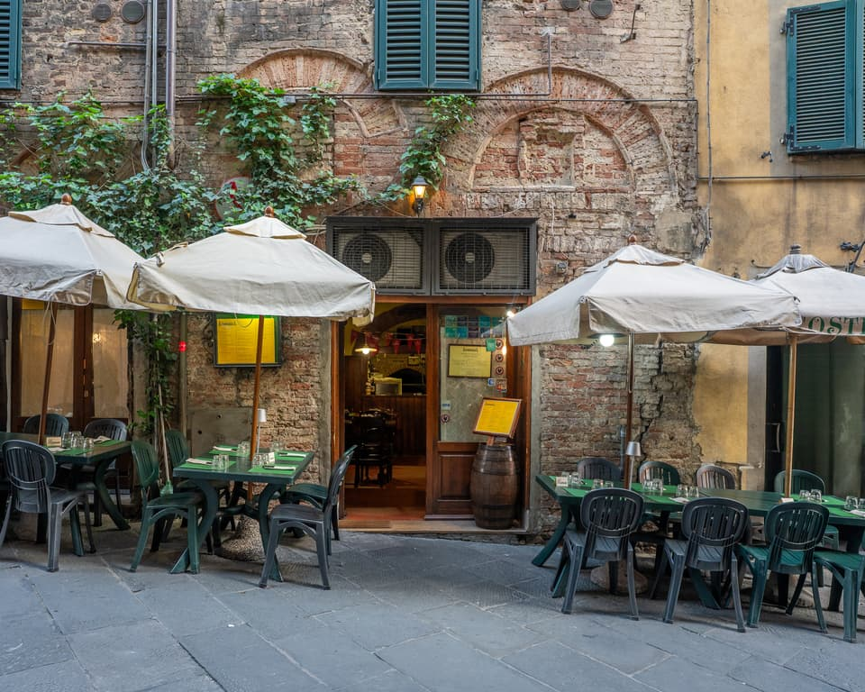
Osteria dei Rossi · Via dei Rossi, Siena
An osteria in Siena inside the walls
At the table, among wrought-iron lanterns: pici, cinghiale in dolceforte, fresh truffle, fiorentina and the wines of the cellar.
Tuesday to Saturday; Sunday lunch only
The street starts hereI · The street
Follow the arrow down Via dei Rossi
Via dei Rossi runs from Banchi di Sopra to Piazza San Francesco and takes its name from the Rossi family's 13th-century castellare. The marble street plate and the iron sign with its arrow mark the way to our door.
- About 5 minutes' walk from the Campo
- Basilica di San Francesco at the end
- Contrada del Bruco


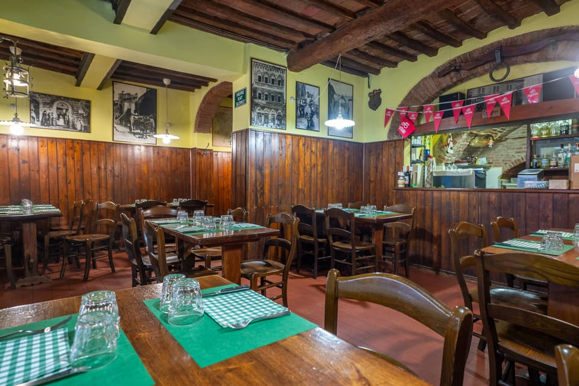
II · The room
Brick and lanterns under the vaults
Beams, wood panelling, a terracotta floor, brick arches and wrought-iron lanterns. Green-and-white check napkins on the tables, a counter with a view into the kitchen; outside, tables on the street under cream parasols.

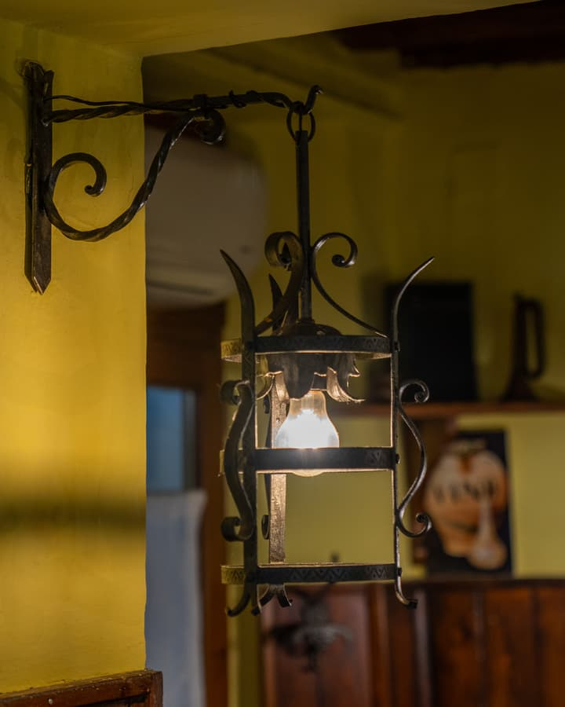
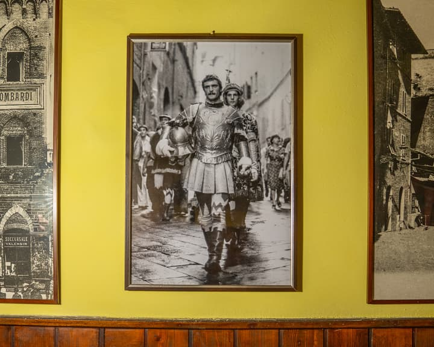
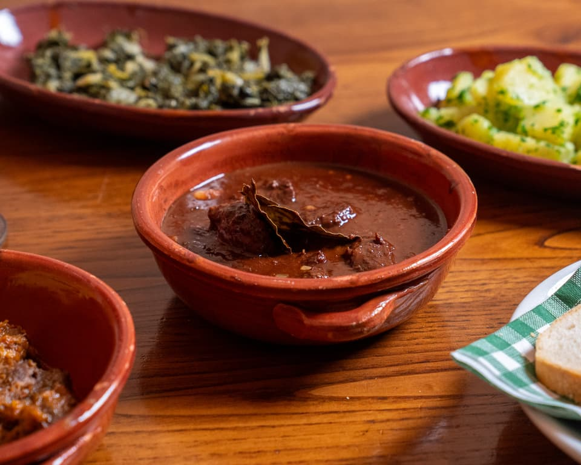
III · The table
Wild boar in dolceforte from medieval cooking
Dolceforte, the sweet-and-sour sauce of the wild boar, goes back to medieval cooking; the chocolate in today's recipe came in later centuries. It reaches the table in a terracotta bowl.
Pici, wild boar, truffle from the menu
Eight of the dishes you will find on the menu.
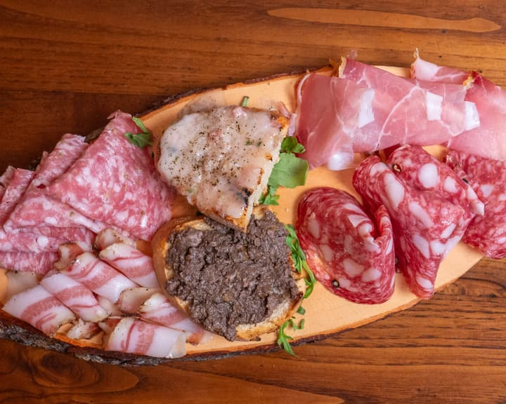
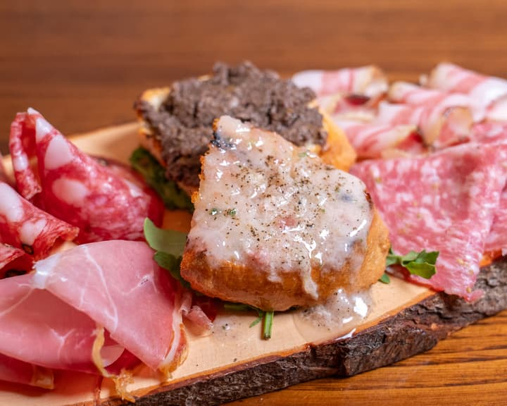
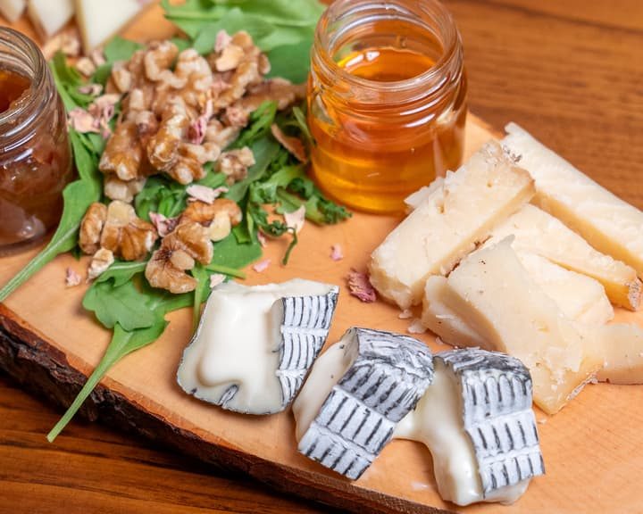
-
Pici al Ragù Bianco di Cinta Senese16 €
Consigliato dall'Oste
White ragù of Cinta Senese pork, without tomato, with herbs and spices
-
Pici Cacio e Pepe15 €
Pici with Tuscan pecorino and black pepper, a classic in Tuscan style
-
Tagliatelle al Tartufo di Stagione18 €
Tagliatelle with sliced fresh truffle, according to the season
-
Cinghiale in Dolce Forte20 €
Wild boar in a sweet-and-sour sauce that goes back to medieval cooking
-
Cinghiale al Coccio con Polenta18 €
Slow-cooked wild boar stew, served with polenta
-
Tegamata di Cinta Senese19 €
Consigliato dall'Oste
Slow-cooked Cinta Senese stew, no tomato, from the Crete Senesi
-
Tagliere del Cacciatore22 €
Cured Cinta Senese pork and game, served on a board
-
Crostini neri senesi9 €
A symbol of Sienese cooking, to start the meal
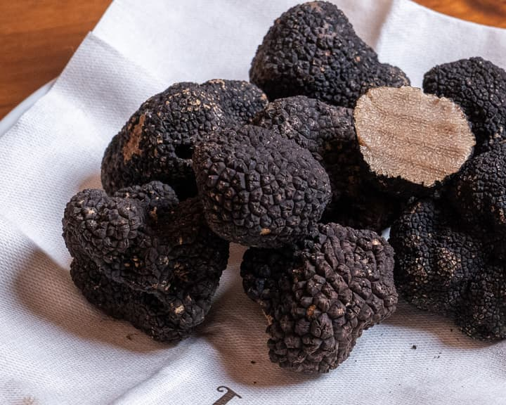
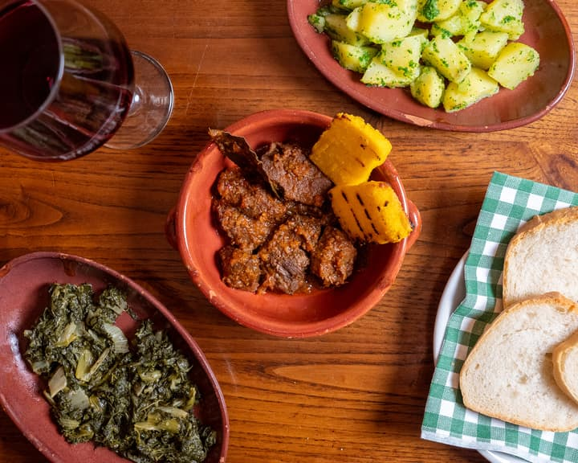

The fiorentina by weight
Every week Alessio, our trusted butcher, chooses the selection: different cuts, from different breeds. The fiorentina is cooked on the grill and priced by weight; you decide how much.
Bistecca alla Fiorentina · 9 € per 100 g
We are among the addresses Gambero Rosso chose for meat in Siena.

IV · The cellar
The grotto to the cellar
A grotto of successive brick arches and vaults leads to the cellar, where the wines of the list are kept. Ask our staff for the wine list.
Among the wines
- Chianti
- Rosso di Montepulciano
- Montalcino
By the glass: red Chianti Classico Gallo Nero, IGT Toscano, Maremma DOC; white Vernaccia di San Gimignano, Vermentino Toscano
To close the meal, at the counter, amari and grappas: Amaro di Siena, Montenegro, Grappa Poli Barricata.

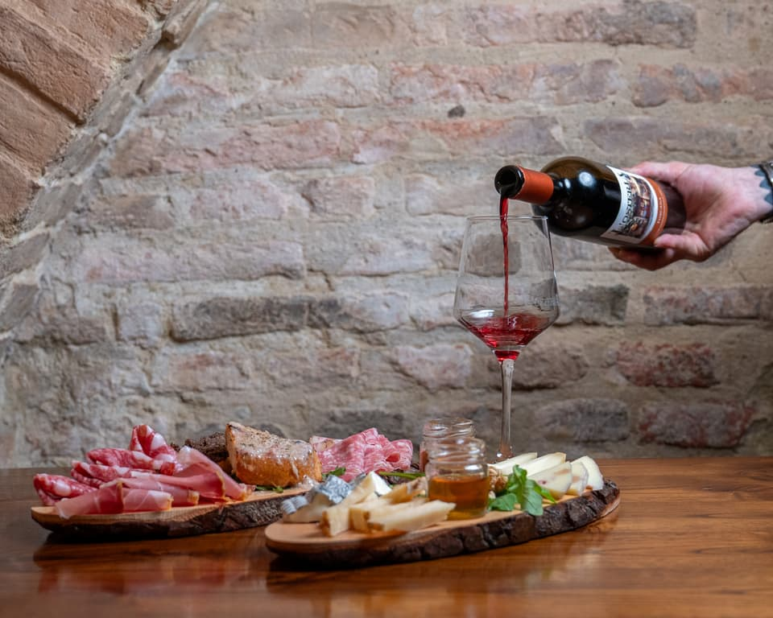
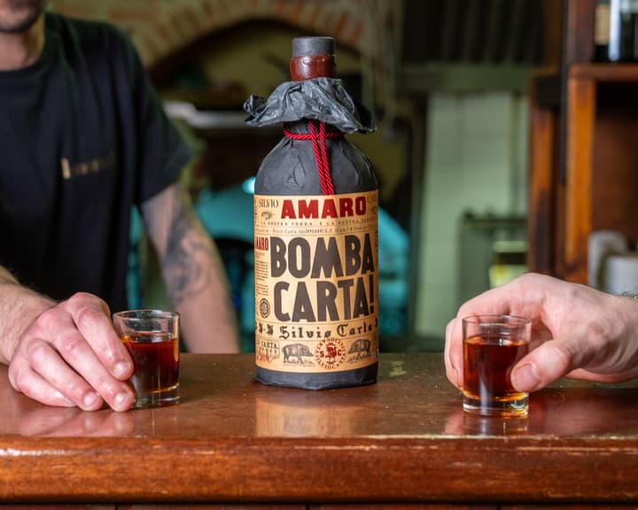
V · The contrada
Since 1992 in the Bruco contrada
The osteria is in the Contrada del Bruco, whose only city gate is Porta Ovile. Giuseppe "Beppe" Carrieri, a brucaiolo, opened it in 1992; today Luca and Max run it, with Luca in the kitchen.
- 1992The osteria opens in Via dei Rossi
- 2024Early in the year, Luca and Max take it over
- TodaySpaghetti alla Chitarra con Sugo dell'Osteria, on the menu since 1992, are still there
The Palio is run on 2 July and 16 August.
Book a table by phone or WhatsApp
The number is the same: choose whether to talk to us or write to us.
Opening hours
- Tuesday to Saturday
- 12:30–15:00 and 19:00–22:30
- Sunday
- 12:30–15:00, lunch only
- Sunday evening and Monday
- closed
Hours may change: please call to confirm.
Where we are on Via dei Rossi
Via dei Rossi, 79/8153100 Siena
From Piazza del Campo it is about 5 minutes on foot. The Basilica di San Francesco stands at the end of the street.
By car, use the San Francesco car park in Via Baldassarre Peruzzi; escalators connect it to the centre.
The centre inside the walls is a limited-traffic zone (ZTL): check the rules before driving in.
Questions and answers for your visit
Where is Osteria dei Rossi, and how far is it from Piazza del Campo?
It is at Via dei Rossi 79/81 in Siena, inside the city walls, in the Contrada del Bruco. Piazza del Campo is about 5 minutes away on foot, and the Basilica di San Francesco stands at the end of the street.
What are the opening days and hours?
From Tuesday to Saturday we are open for lunch from 12:30 to 15:00 and for dinner from 19:00 to 22:30; on Sunday for lunch only, from 12:30 to 15:00. We are closed on Sunday evening and on Monday. Hours can change, so please call +39 0577 287592 to confirm.
How do I book a table?
You can book by phone on +39 0577 287592 or on WhatsApp on the same number; the Book a table button on this site offers both.
What are the house dishes?
The dishes marked Consigliato dall'Oste (recommended by the host) include the beef tartare, pici with traditional duck ragù, pici with white Cinta Senese ragù, the slow-cooked Cinta Senese stew and the bistecca alla fiorentina. Spaghetti alla chitarra with the osteria's own sauce has also been on the menu since 1992.
What is cinghiale in dolceforte?
It is a wild boar dish with dolceforte, a sweet-and-sour sauce that goes back to medieval cooking. The chocolate in today's recipe was added in later centuries.
Are there outdoor tables?
Yes, there are tables on the street outside the door, under cream parasols.
Where can I park, and can I arrive by car?
The whole walled centre is a limited-traffic zone (ZTL), so check the rules before driving in. The San Francesco car park, in Via Baldassarre Peruzzi, is linked to the centre by escalators.
How much is the cover charge?
The cover charge is 2.50 € per person. Steaks are sold by weight, at the price per 100 g shown on the menu.
How do you handle allergens and intolerances?
Please ask the staff before ordering: the allergen list for each dish is being confirmed and is not yet published on this site.
What wines do you serve?
By the glass there are reds such as Chianti Classico Gallo Nero, IGT Toscano and Maremma DOC, and whites such as Vernaccia di San Gimignano and Vermentino Toscano; by the bottle there is the house wine, Vino l'Osteria, red and white. The cellar holds the wines of the wine list, which includes Chianti, Rosso di Montepulciano and Montalcino.